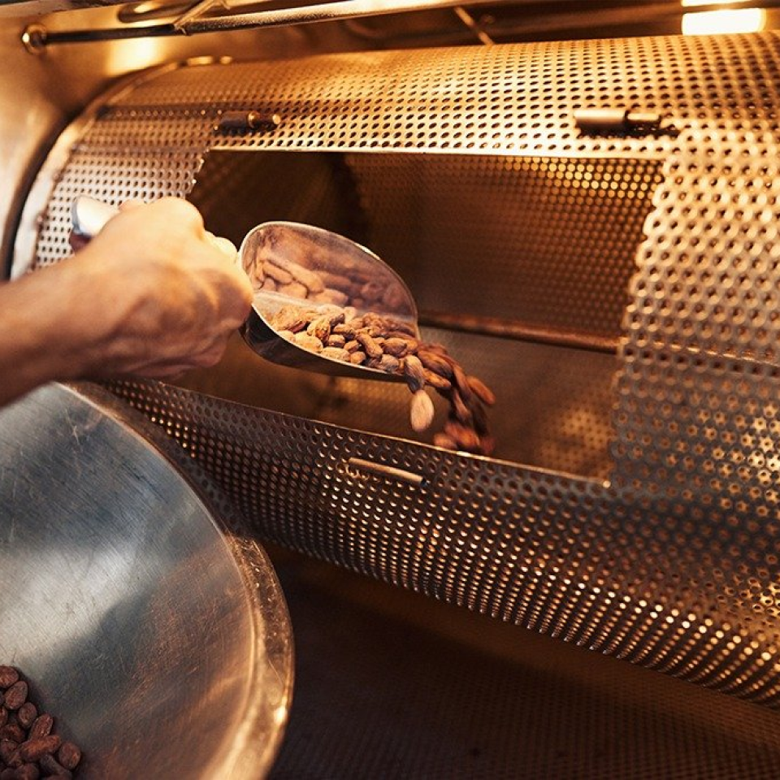

Roasting
After the raw cocoa nibs are gathered and cleaned, they are to be dried and prepared for the Roasting process. During this time, any bacteria will be killed off by the 350 Fahrenheit oven. In turn this will also become a precursor for the fermentation process, and enrich the flavor. Though the ability to know when the cocoa beans are done is a skill learned by chocolatiers, based on smell; taste; and temperature.
